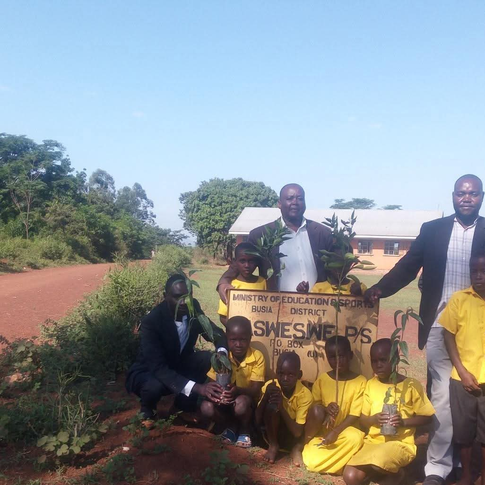

Schools & public spaces
Orchards in public institutions
Working with schools and other public institutions to make fruit trees part of everyday learning and community life.
This project supports the planting and care of fruit trees in public spaces across Busia District. Orchards can create practical opportunities to learn about nutrition, food growing, and environmental care.
Orchid Initiative works with local partners to share orchard management and tree care skills with the people who will look after each site.
Support this workProject photos
